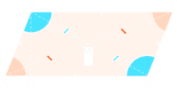

Parallelogrammi
I quadrilateri che hanno i lati opposti paralleli prendono il nome di parallelogrammi e possono essere considerati la parte comune di due strisce che si intersecano. Il nome parallelogrammo deriva dal greco parallelos = parallelo e gramme = linea.
Un quadrilatero avente i lati opposti paralleli è un parallelogramma, questo ha:
i lati opposti congruenti;
gli angoli opposti congruenti;
gli angoli adiacenti a uno stesso lato supplementari;
le diagonali che si dividono scambievolmente per metà.
AB = CD; BC = DA, ABC = CDA; DAB = BCD; AO = OC; DO = OB; A + B = 180°; A + B = 180°; C + D = 180°; B + C = 180.
Definition 2.1.1. An altitude of a parallelogram is a line segment drawn from a vertex of the parallelogram perpendicular to a nonadjacent side (opposite side), or its extension. So it is the perpendicular distance from a side to the op posite vertex. The length of the altitude is called the height of the parallelogram. □

heigth = h = DE
Area of Parallelogram = b x h = AB x DE
heigth = h = CE
Area of Parallelogram = b x h = AB x CE
heigth = h = DE
Area of Parallelogram = b x h = BC x DE

heigth = h = AE
Area of Parallelogram = b x h = BC x AE
Definition 2.1.2. Chiamiamo centro di un parallelogramma il punto di incontro delle sue diagonali. □
Rettangolo
Un rettangolo è un parallelogramma con un angolo retto. Un rettangolo ha:
i quattro angoli retti;
le diagonali congruenti;
gode di tutte le proprietà del parallelogramma quindi, in particolare, ha le diagonali che si dividono scambievolmente per metà.
AB = CD = BC = DA
 = B̂ = Ĉ = D̂ = 90°
AC = BD
AO = OC = DO = OB
Rombo

Se un parallelogramma ha gli angoli congruenti, è un rettangolo (che è, quindi, un poligono equiangolo). Se un parallelogramma ha i lati congruenti, è un rombo (che è quindi un poligono equilatero). Infinite definiamo il quadrato come rettangolo con i lati congruenti oppure come rombo con gli angoli congruenti (è un poligono equiangolo ed equilatero, quindi è regolare).
Un rombo ha:
i quattro lati congruenti;
le diagonali perpendicolari e bisettrici degli angoli;
gode di tutte le proprietà del parallelogramma quindi, in particolare, ha le diagonali che si dividono scambievolmente per metà.

AB = BC = CD = DA
 = Ĉ B̂ = D̂
AC ⊥ BD e DO = OB
Quadrato
Un quadrato è un parallelogramma che ha tutti i lati congruenti e tutti gli angoli retti. Il quadrato è contemporaneamente un rombo, un rettangolo e gode quindi delle proprietà dei rombi e dei rettangoli.

AB = BC = CD = DA
 = B̂ = Ĉ = D̂ = 90°
AC = BD
AC ⊥ BD
AO = OC = DO = OB
Area rombo
Il rombo è un particolare parallelogramma. Quindi, la sua area si può calcolare con la formula che conosciamo:
A = b ⋅ h
Esiste tuttavia un’altra formula che si applica quando è nota la misura di ciascuna diagonale del rombo.
Consideriamo allora un rombo R0 con le diagonali che misurano d1 e d2.

Tracciamo dai vertici A e C le parallele alla diagonale maggiore e dai vertici D e B le parallele alla diagonale minore: otteniamo un rettangolo R, con le dimensioni congruenti alle diagonali del rombo.
Osserviamo che il rombo è formato da quattro triangoli congruenti, mentre il rettangolo è formato da otto di questi triangoli.
Deduciamo allora che:
un rombo è equivalente alla metà di un rettangolo con la base e l’altezza lunghe come le diagonali del rombo.
Quindi, passando all’area, diciamo in generale che: L’area di un rombo si ottiene moltiplicando le misure delle diagonali e dividendo il prodotto per due.